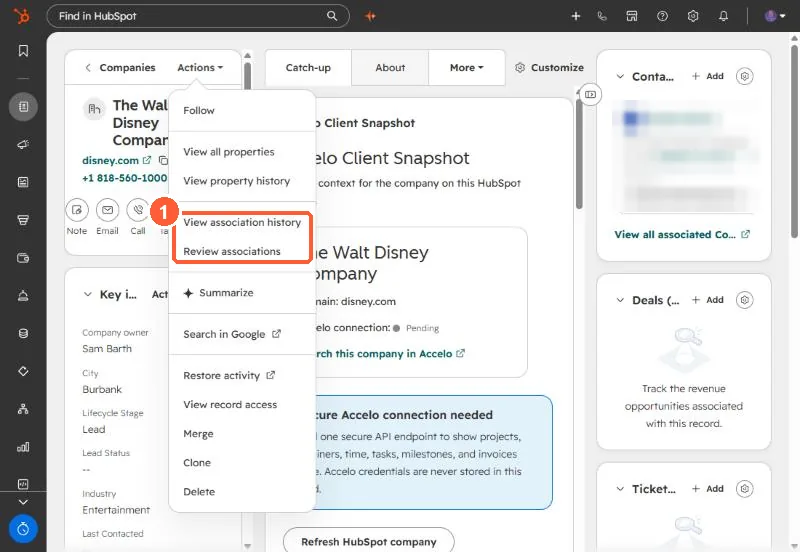

Short answer
On a record, Actions > View association history shows a table of past and current associations and engagements, filterable by object, with changes such as association created, label added or changed, or object deleted. Review associations shows current associations by object or label and lets you remove several at once.
1. Where


2. History
- Filter by object type to see changes for deals, notes and so on.
- The update column shows created, label added or changed, and object deleted.
3. Review and clean up
Review associations groups current links by object type or label. Select and remove in bulk. For automatic company links by domain, see auto-association by domain, and for labels, association labels.